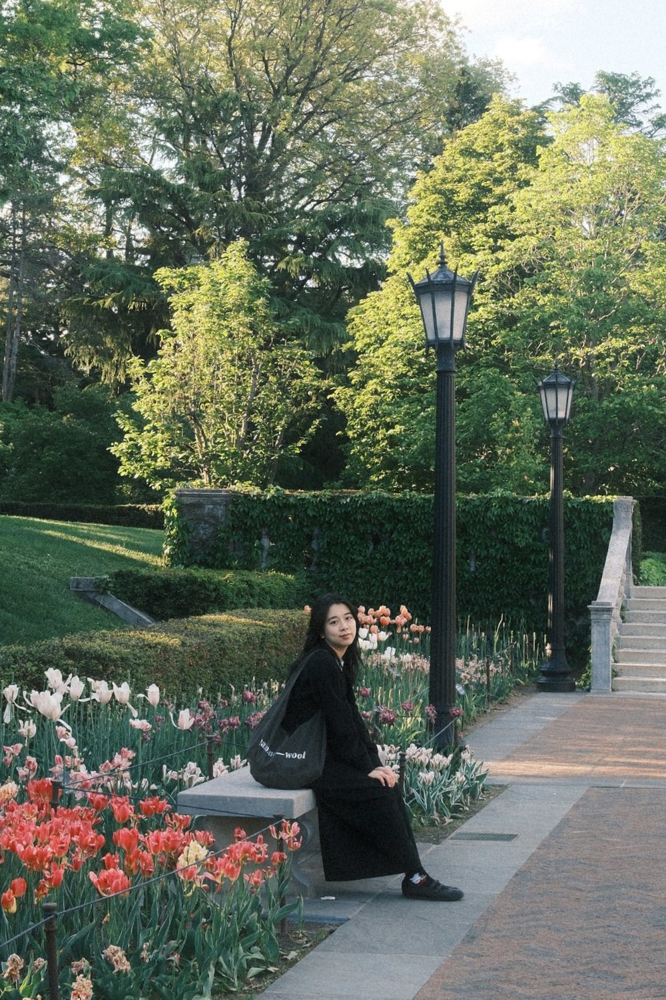

about me
I'm a UX/product designer who strives to learn and create.
I started out designing graphics and my own Tumblr theme. Now I work with people from all kinds of backgrounds toward a common goal: empowering users, with a focus on social impact and accessibility. Currently a UX Designer at Synopsys.
I studied at the University of Michigan School of Information: an MS in Information (UX Research & Design) and a BS in Information (UX Design) with a minor in Art & Design.
experience
- UX DesignerSynopsysJan 2025 – now
- Graduate Student Instructor, SI 582University of MichiganSep – Dec 2025
- UX InternAnsysMay – Aug 2024
- Accessibility Media AssistantReco(r)ding CripTechJan 2024 – Apr 2025
- Research Assistant & DesignerSchool of InformationJun 2022 – Dec 2025
- Graphic DesignerNam Center for Korean StudiesJan – Sep 2022
projects
- Service DesignerDearborn Administrative CenterSep – Dec 2025
- UX ConsultantJSTOR DailySep 2024 – Apr 2025
education
- MS Information — UX Research & DesignUniversity of MichiganMay 2026
- BS Information — UX Design, minor in Art & DesignUniversity of MichiganMay 2025
activities
- Mandarin Summer ProgramNational Taiwan Normal UniversityJun – Aug 2025
- SecretaryTaiwanese American Student AssociationAug 2021 – May 2025
- CreatorShift Creator SpaceAug 2021 – May 2025
off the clock
I collect stationery from the cities I travel to and make spreads in my Hobonichi Weeks planner. I'm usually listening to Cafuné, Underscores or Yves (I've seen all of them in concert!), and I'm always down for Thai, Mexican, Korean or Japanese food.